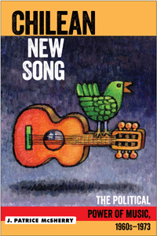

<body bgcolor="#FFFFFF" text="#000000" link="#0000FF" vlink="#CC0000" alink="#CC0000"><center><hr width="350" size="1" align="center" noshade>An examination of the Chilean New Song movement as an organic part of the struggles for progressive social change<hr width="350" size="1" align="center" noshade><p><a href="https://cdcshoppingcart.uchicago.edu/Cart/ChicagoBook.aspx?ISBN=9781439911518&&PRESS=temple" target="_top">Buy this book!</a> | <a href="https://cdcshoppingcart.uchicago.edu/Cart/Cart.aspx?PRESS=temple" target="_top">View Cart</a> | <a href="https://cdcshoppingcart.uchicago.edu/Cart/Cart.aspx?PRESS=temple" target="_top">Check Out</a></p><p></p></center><!--none//--><h1>Chilean New Song</h1>
<H2>The Political Power of Music, 1960s-1973</H2>
<h3>J. Patrice McSherry</h3>
<P>cloth 1-4399-1151-7 $97.50, Apr 15, <FONT COLOR=#990033>Available</FONT>
<br>paper 1-4399-1152-5 $44.95, Apr 15, <FONT COLOR=#990033>Available</FONT>
<br>Electronic Book 1-4399-1153-3 $44.95 <FONT COLOR=#990033>Available</FONT>
<BR> 232 pp
6x9
</P><h3 align="center"><P><font color="#996633">Cecil B. Currey Book Award,
2015</font></P>
</H3>
<BLOCKQUOTE><I>"McSherry very clearly understands the power of </i>la Nueva Canci�n<i> in Chilean society, culture, and politics during the 1960s and 1970s, bringing to bear a solid grasp of the secondary literature and an impressive collection of oral-history interviews that give great vibrancy and life to the story of the movement. Her interviews with figures ranging from the famous��ngel Parra and Quilapay�n�to the �behind-the-scenes� folks who were crucial to the movement's emergence, development, and success are impressive. What emerges is a treatment of </i>la Nueva Canci�n<i> that weds the cultural and the political with the real-life experiences of Chileans who were agents in the creation of the cultural-political milieu in which they circulated."</i><br>&#151<b>Patrick Barr-Melej</b>, Associate Professor of History, Ohio University, and author of <i>Reforming Chile: Cultural Politics, Nationalism, and the Rise of the Middle Class</i></I></BLOCKQUOTE>
<P>Chilean New Song (<I>la Nueva Canci�n chilena</i>) entranced and uplifted a country that struggled for social change during the turbulent 1960s and early 1970s, until the 1973 coup that overthrew democratic socialist president Salvador Allende. This powerful musical style�with its poetic lyrics and haunting blend of traditional indigenous wind and stringed instruments�was born of and expressed the aspirations of rising classes. It promised a socially just future as it forged social bonding.
<P>In <I>Chilean New Song</I>, J. Patrice McSherry deftly combines a political-historical view of Chile with a narrative of its cultural development. She examines the democratizing power of this music and, through interviews with key protagonists, the social roles of politically committed artists who participated in a movement for change. McSherry explores the impact of Chilean New Song and the way this artistic/cultural phenomenon related to contemporary politics to capture the passion, pain, and hope of millions of Chileans.
<BR>&nbsp;<h2>Excerpt</h2><P>Excerpt available at <a href="http://www.temple.edu/tempress">www.temple.edu/tempress</a></p>
<BR>&nbsp;<h2>Reviews</h2>
<p><i>"</i>Chilean New Song<i> is a valuable book. It is interesting, well structured, well sourced, and fluidly written. McSherry�s theoretical framework and political science foundation provide a useful way to approach New Song within the broader Chilean cultural context of the time. The in-depth interviews with numerous participants in Chilean New Song are a tremendous source of insight into and elaboration of central points through first-person accounts of the events discussed."</i> <br>&#151<b>Nancy Morris</b>, Professor of Media and Communication, Temple University
<p><i>"This book provides interesting theoretical frameworks for understanding creativity and politics within Chilean New Song. McSherry offers not only a synthesis of literatures regarding the political scene in Chile during the early 1970s and a good history of the Chilean Left and its cultural problems and achievements but also insights into the internal political agenda of the Chilean Left in the early 1970s and its relation to New Song and culture in general. This is a very good book."</i><br>&#151<b>Juan Pablo Gonz�lez</b>, Director, Instituto de M�sica, Alberto Hurtado University, Chile
<p><i>"McSherry focuses on the development and significance of Chile�s </i>nueva canci�n<i>, or �new music,� movement, which was linked inextricably to social, political, and cultural conditions in Chile.... [T]he research is impressive�she includes interviews with many musicians and other key figures in </i>nueva canci�n<i>.... A valuable resource for those interested in the intersection of the arts, politics, and culture�. Summing Up: Recommended."</i>
<br>&#151<b><i>CHOICE</i></b>
<p>Chilean New Song<i>, by J. Patrice McSherry, was reviewed in the Fall 2015 issue of the Journal of Third World Studies. The review read, "Chilean New Song, a product of several years of research conducted by J. Patrice McSherry in Chile, will have a significant impact on many of its readers.... The reader quickly moves from a rich, concise introduction to the rise of </i>la nueva cancion<i>, and its connection to social change, to the book's conclusion.... McSherry's discussion of </i>la nueva cancion<i> in Chapter 3 is exceptional. Here one can observe the process of blending folklore with an original composition.... </i>Chilean New Song<i> is a beautifully written treatise on the creative grassroots soul of Chile. The book also contributes to the literature on music and song as resistance, and to cultural and political memory studies."</i>
<br>&#151<b><i>Journal of Third World Studies</i></b>
<p>"McSherry offers a thoroughly researched and clearly argued account of the origins of the 'New Song' movement, the role it played in helping to articulate a common set of popular demands, its interactions with the UP (Popular Unity) parties, and its relation to the broader cultural environment supported by Allende�s government. Her book provides the single, most detailed history of the history of this musical genre and is significantly enhanced by the numerous interviews that she conducted with many of the most important surviving performers of that era.... McSherry�s analysis opens the door to a reconsideration of political formation during the Popular Unity years, an essential historiographic contribution.... [A]n extremely valuable resource for those interested in the way that the revolutionary politics of the Popular Unity years was articulated and circulated as culture."</i>
<br>&#151<b><i>Social Justice, Vol. 43, No. 1 (2016)</i></b>
<p>"[E]legantly written...an interesting analysis of the political context of the early years of Nueva Canci�n, expanding the rather small literature in English about the topic."</i><br>&#151<b><i>Latin American Music Review</i></b>
<p>"McSherry writes in a clear and engaging style, and the book is highly accessible to the general reader.... McSherry weaves a narrative built heavily on interviews with New Song musicians themselves, and often cites them at length. Some of these interviews constitute revealing, valuable sources for understanding the nuances of the New Song movement."</i><br>&#151<b><i>Latin American Politics and Society</i></b>
<p>"[A] detailed analysis of the historical and political context in which New Song emerged in Chile in the 1960s, and also an illuminating survey of the motivations and aims of the movement�s composers within Chile as articulated by the artists themselves.... The main original contribution of this highly readable book is its in-depth oral-history interviews with many of the movement�s most important Chilean practitioners, which provide a fascinating insight into the primary motivations and subsequent reflections of these committed musicians.... [T]hese interviews... shed new light on the musicians� experiences within the movement and their own evaluations of what they believe they achieved through music at that time."</i>
<br>&#151<b><i>Bulletin of Latin American Research</i></b>
<p>"Combining a study of Chile�s political history with the analysis of songs' lyrics and oral history from some key figures in the </i>Nueva Canci�n Chilena<i> (Chilean New Song, CHNS) movement, McSherry rescues a very important part of Chilean and Latin American history.... The book is very well written and researched. The generations that grew up during this time will experience a nostalgic trip reviving the powerful lyrics discussed throughout the chapters. The newer generations, on the other hand, will find in this book a valuable tool to appreciate the political and historical context in which these artists and their cultural production came to exist."</i>
<br>&#151<b><i>Journal of Iberian and Latin American Research</i></b>
<BR>&nbsp;<h2>Contents</h2><P>
<p>Foreword � The Movement of Musical Identity in Chile
<br>(1950�1973): The River of Cultures, by <i>Jos� Seves S.</i>
<br>Preface and Acknowledgments
<br>1. <i>La Nueva Canci�n</i> and Its Significance
<br>2. Art and Politics Intertwined in Chile: A Selected History
<br>3. The Emergence of <i>la Nueva Canci�n Chilena</i>
<br>4. <i>La Nueva Canci�n</i> and the Unidad Popular
<br>5. Politically Committed Artists and Their Music
<br>6. Musical and Political Contributions of <i>la Nueva Canci�n</i>
<br>7. The Coup and Its Aftermath
<br>8. Conclusion
<br>Notes
<br>Index
</P><BR>&nbsp;<H2>About the Author(s)</H2>
<P><b>J. Patrice McSherry</b> is a Professor of Political Science at Long Island University and a Visiting Professor at Alberto Hurtado University in Santiago. She is the author of <i>Predatory States: Operation Condor and Covert War in Latin America</i> and <i>Incomplete Transition: Military Power and Democracy in Argentina</i> and a co-editor (with John Ehrenberg, Jos� Ram�n S�nchez, and Caroleen Marji Sayej) of <i>The Iraq Papers</i>.</P>
<BR><H2>Subject Categories</H2>
<p><A HREF="/tempress/latin.html" TARGET="_top">Latin American/Caribbean Studies</a>
<BR><A HREF="/tempress/political.html" TARGET="_top">Political Science and Public Policy</a>
<BR><A HREF="/tempress/music.html" TARGET="_top">Music and Dance</a>
</p>
<p align="center"><a href="https://cdcshoppingcart.uchicago.edu/Cart/ChicagoBook.aspx?ISBN=9781439911518&&PRESS=temple" target="_top">Buy this book!</a> | <a href="https://cdcshoppingcart.uchicago.edu/Cart/Cart.aspx?PRESS=temple" target="_top">View Cart</a> | <a href="https://cdcshoppingcart.uchicago.edu/Cart/Cart.aspx?PRESS=temple" target="_top">Check Out</a></p><p><font face="Arial" size="1"><a href="copyright.html" onMouseOver="window.status='Web Copyright Policy';return true;" onMouseOut="window.status=''" title="Web Copyright Policy">&copy;</a> 2017 <a href="http://www.temple.edu" target="new" onMouseOver="window.status='Link to Temple University home page';return true;" onMouseOut="window.status=''" title="Link to Temple University home page">Temple University</a>. All Rights Reserved. http://www.temple.edu/tempress/titles/2327_reg.html</font></p>